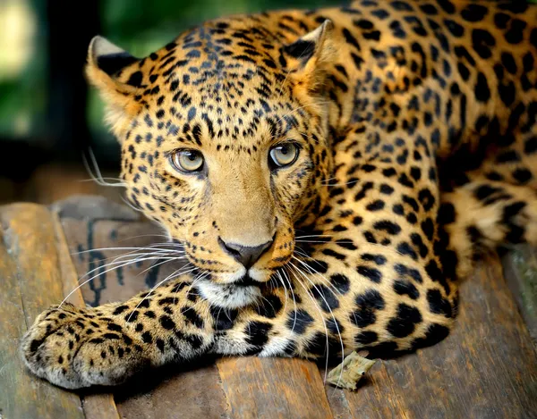
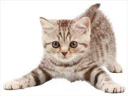
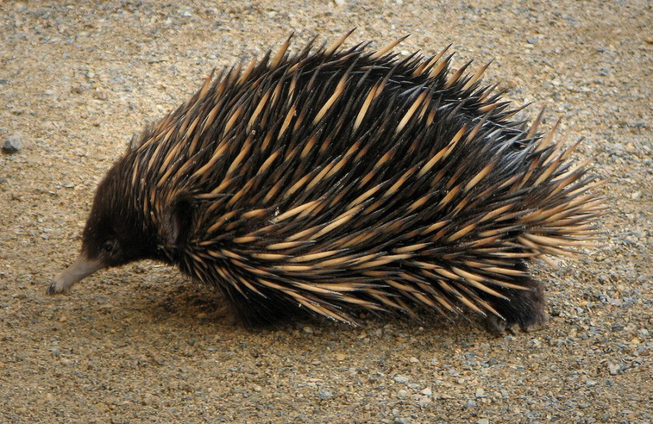
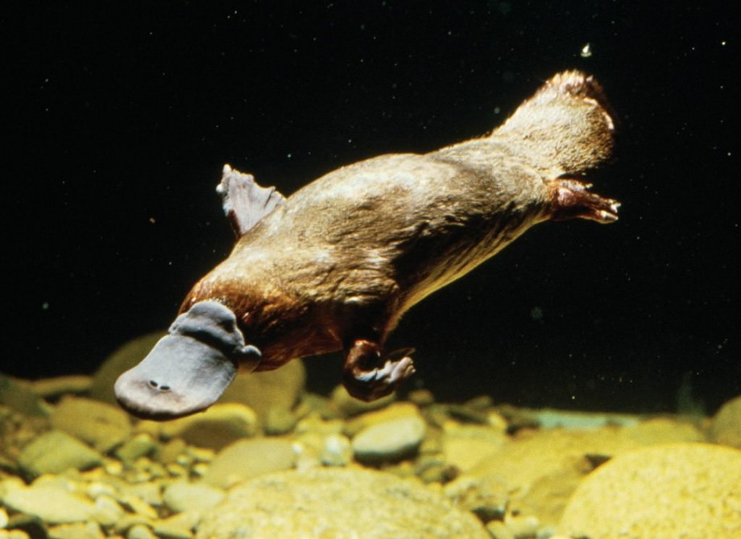
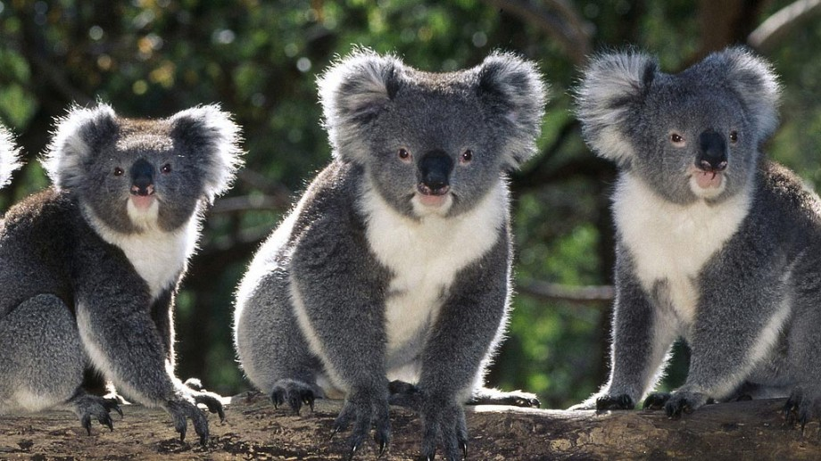
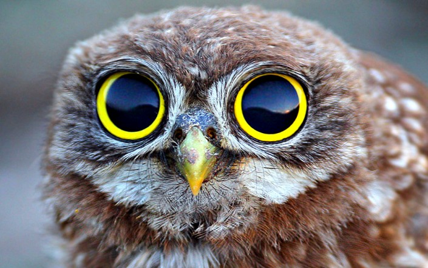
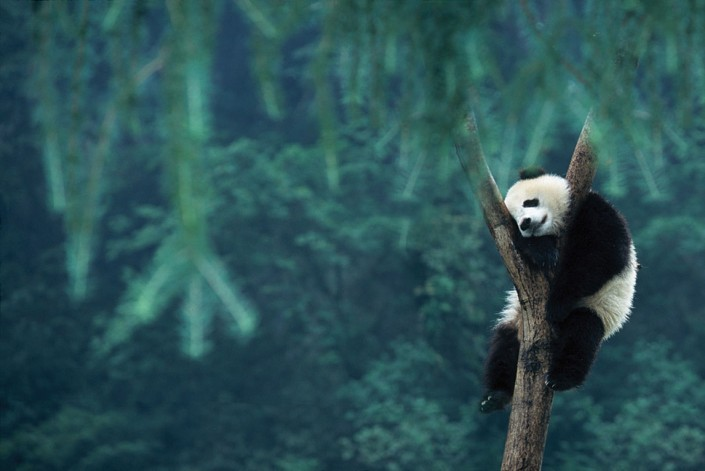
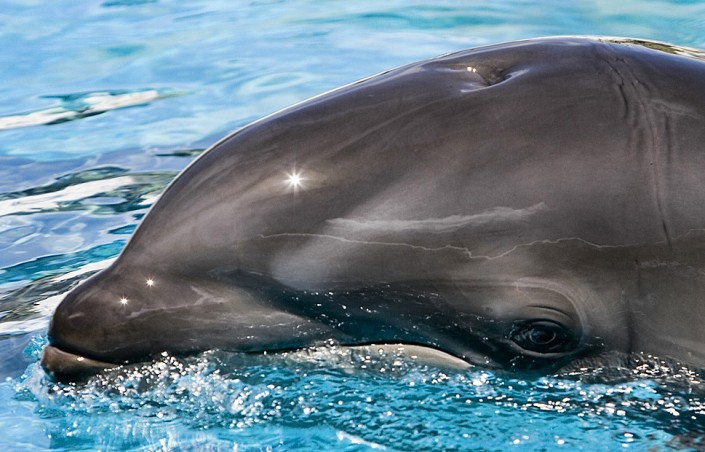

Животные делятся на 2 типа

Дикие
Дикие животные — объекты животного мира, к которым относят животных, естественной средой обитания которых является дикая природа, а также находящиеся в состоянии естественной свободы, содержащиеся в полусвободных условиях или в неволе

Домашние
Дома́шние живо́тные — животные, которые были одомашнены человеком разумным и которых он содержит, предоставляя им кров и пищу. Они приносят ему пользу либо как источник материальных благ и услуг, либо как животные-компаньоны, скрашивающие его досуг. Большинство домашних животных легко размножаются. Проводя селекцию, человек может контролировать их размножение и признаки, которые они передают своему потомству.

Ехидновые
Ехидны обитают преимущественно в Австралии. Их маленькое тельце покрыто как мехом, так и шипами. Шипы ехидны на самом деле – это модифицированные волосы, состоящие их кератина

Утконос
Утконос – это животное, внешний вид которого, является одним из самых необычайных и странных в мире: плоский клюв как у утки, хвост как у бобра и тело как у выдры. Это странное, но удивительное животное преобладает в северной Австралии.

Коала
Ночным животным Австралии считается коала. Их насчитывается около 700 видов.

Объем глазниц у сов почти целиком занят глазным яблоком, отчего они не могут вращать глазами и видят только то, что перед ними. А вот голову они поворачивают аж на 360 градусов!

У панд нет специального места для сна - ни кровати, ни гнезда. Поэтому они засыпают там, где оказались в момент усталости. И если сон сморил их в тот момент, когда они залезли на дерево, ну что ж, так тому и быть.

Дельфин не просто спит с одним открытым глазом - он спит с одним работающим "дежурным" полушарием мозга! Пока дельфин видит сны про то, как во время выступления в дельфинарии обнаружил, что на нем нет штанов, "дежурное" полушарие следит, чтобы дельфин вовремя сделал вдох и не захлебнулся.
Снежный Барс
И́рбис, или сне́жный барс,(лат. Panthera uncia, ранее — лат. Uncia uncia) — крупное хищное млекопитающее семейства кошачьих, обитающее в горах Центральной Азии
Ирбис отличается тонким, длинным, гибким телом, относительно короткими лапами, небольшой головой и очень длинным хвостом. Достигая вместе с хвостом длины 200—230 см,
имеет массу до 55 кг. Окраска меха светлая дымчато-серая с кольцеобразными и сплошными тёмными пятнами.
В силу труднодоступности местообитания и низкой плотности вида до сих пор остаются малоисследованными многие аспекты его биологии.
Бурундук
Бурундуки́ — монофилетическая группа грызунов из семейства беличьих. Согласно классификации, принимаемой Красной книгой МСОП,
существует три самостоятельных рода бурундуков: Neotamias, Eutamias и Tamias
В зависимости от вида масса бурундука может составлять от 30 до 120 г, а размер — от 5 до 15 см при длине хвоста от 7 до 12 см. Наиболее заметный признак всех видов — пять тёмных полосок вдоль спины, разделённые белыми или серыми полосками. Окраска других участков тела — красно-бурая или серо-бурая. Так как это является общей чертой всех бурундуков, отдельные виды на первый взгляд трудноразличимы.
Красный волк
Красный волк, или горный волк, (устаревшие названия: гималайский волк или буанзу) (лат. Cuon alpinus) — хищное млекопитающее семейства псовых; единственный вид рода Cuon. Редкий вид псовых, находящийся под угрозой исчезновения, занесён в Красную книгу МСОП.
Красный волк — довольно крупный зверь с длиной тела 55—110 см, хвоста — 45—50 см и массой 17—21 кг. В его облике сочетаются черты волка, лисицы и шакала. От обыкновенного волка отличается окраской, пушистой шерстью и более длинным хвостом, почти достигающим земли, а конец хвоста черный. Характерна укороченная, заострённая морда. Уши большие, стоячие, с закруглёнными вершинами, высоко посажены на голове.